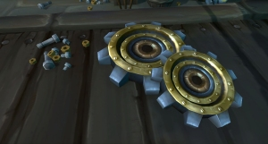
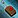
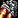
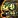
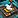
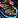
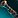
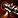

This guide provides an overview of the additions and changes to Engineering in World of Warcraft Battle for Azeroth.Table of contents
New in Patch 8.3
Void Focus
The Void Focus is a new crafting station that is used to craft the new raid gear.
Check out my guide on How to Unlock the Void Focus. (It works exactly the same as the Abyssal Focus worked in patch 8.2.)
Goggles and Weapons
There are two new ilvl 400 weapons:
There are also a new set of engineering goggles, at ilvl 440, 455, and 470. You can get the recipes for the goggles from Faceless, K'thir, Aqir, and Cultists mobs that worship N'Zoth (random drop). You can find these mobs at the new Vale of Eternal Blossom Assauls, Uldum Assaults and inside Lesser Visions. (Not available on week 1 of patch 8.3)
You will discover the recipe for the ilvl 455 goggles by crafting the ilvl 440 ones. And you need to craft the ilvl 455 goggles to discover the ilvl 470 goggle recipes.
New in Patch 8.2
- New set of goggles, at ilvl 415, 430, and 445.
 Notorious Combatant's Discombobulator - ilvl 370 1H Mace
Notorious Combatant's Discombobulator - ilvl 370 1H Mace- Notorious Combatant's Stormsteel Destroyer - ilvl 370 Gun
- Wormhole Generator: Zandalar
- Wormhole Generator: Kul Tiras

Blingtron 7000- The Ub3r-Spanner gets 3 new modules: Ub3r-Module: Scrap Cannon,
 Ub3r-Module: Ub3r-Coil,
Ub3r-Module: Ub3r-Coil, 
Ub3r-Module: P.O.G.O.
Learning BfA Engineering
The new BfA Engineering skill is named differently for the two factions, but the name is the only difference between them.
 Kul Tiran Engineering is the Alliance version and
Kul Tiran Engineering is the Alliance version and  Zandalari Engineering is the Horde version.
Zandalari Engineering is the Horde version.
Engineering Trainers:
- Horde: You can find Shuga Blastcaps in Dazar'alor at the Terrace of Crafters.
- Alliance: Layla Evenkeel is located in Boralus at the Tradewinds Market.
{kind=link}
{kind=link}
You can walk up to a guard in Dazar'alor or Boralus then ask where the Engineering trainer is located. This will place a red marker on your map at the trainer's location.
Leveling Engineering
Professions skills are split between expansions now, you'll have a separate skill bar for each expansion. This means you can level the new Battle for Azeroth skill tier without putting any point into any of the previous expansions tiers, you don't have to level Engineering with older materials to be able to craft the new BfA items. The new Battle for Azeroth Engineering has a maximum of 175 skill points. You can read more about this in my BfA Profession overview.
Every BfA recipe will require different Engineering skill levels, so it's very different from what we had in Legion where you could craft most high-level items with Engineering skill 1. You will have to level your BfA Engineering skill up if you want to craft high-level items.
Check out my BfA Engineering leveling guide 1-175, if you are looking for a more in-depth leveling guide with exact numbers and reagents needed.
Acquiring Recipes
Most recipes still have ranks just like in Legion, but there are no profession quests for crafting profession in BfA, you will learn most rank 1 and rank 2 recipes from your trainer. They are gated by profession skill, so you have to level your Alchemy up to get every recipe.
- Rank 1: Allows you to craft the item.
- Rank 2: Reduces the materials required to craft an item.
- Rank 3: Greatly reduces the materials required to craft an item.
Reputation Vendors
You can buy most Rank 3 recipes from vendors, but none of them require Exalted reputation, only Revered, so it's pretty easy to get them. (A few rank 3 recipes come from World Quests)
Horde:
- Zandalari Empire - Natal'hakata in Zuldazar.
- Voldunai recipes - Hoarder Jena in Vol'dun.
- Talanji's Expedition - Provisioner Lija in Nazmir.
- The Honorbound - Ransa Greyfeather in Zuldazar.
Alliance:
- Storm's Wake - Sister Lilyana in Stormsong Valley.
- Order of Embers - Quartermaster Alcorn in Drustvar.
- Proudmoore Admiralty - Provisioner Fray in Tiragarde Sound.
- 7th Legion - Vindicator Jaelaana in Tiragarde Sound.
Neutral:
- Tortollan Seekers - Collector Kojo at Scaletrader Post in Zuldazar, or by Collector Kojo at Seeker's Vista in Stormsong Valley.
Crafting Materials
There are 3 new ores:  Monelite Ore,
Monelite Ore,  Storm Silver Ore and
Storm Silver Ore and  Platinum Ore
Platinum Ore
There are also 5 soulbound crafting materials:
 Expulsom is obtained primarily from scrapping armors and weapons using the Scrap-o-Matic 1000 (Alliance), or the Shred-Master Mk1 (Horde). These tools work like disenchanting, you can break down any gear obtained that is from the Battle for Azeroth expansion, including dungeon/raid drops, quest rewards, world drops and crafted gear. You can read about this in more detail if you visit my Expulsom Farming Guide.
Expulsom is obtained primarily from scrapping armors and weapons using the Scrap-o-Matic 1000 (Alliance), or the Shred-Master Mk1 (Horde). These tools work like disenchanting, you can break down any gear obtained that is from the Battle for Azeroth expansion, including dungeon/raid drops, quest rewards, world drops and crafted gear. You can read about this in more detail if you visit my Expulsom Farming Guide.
 Tidalcore is a guaranteed drop from the last boss in a Mythic dungeons and from the chest at the end of any level Mythic Plus Dungeon. They can also drop from the last boss of a heroic dungeon, however, this is not a guaranteed drop.
Tidalcore is a guaranteed drop from the last boss in a Mythic dungeons and from the chest at the end of any level Mythic Plus Dungeon. They can also drop from the last boss of a heroic dungeon, however, this is not a guaranteed drop.
 Breath of Bwonsamdi drops from bosses in the new raid Battle for Dazar'alor and is used for crafting epic 400 and 415 item Alchemy trinkets. (1 from each LFR wing, 1 from a Normal boss, 10 from a Heroic boss, 20 from a Mythic boss)
Breath of Bwonsamdi drops from bosses in the new raid Battle for Dazar'alor and is used for crafting epic 400 and 415 item Alchemy trinkets. (1 from each LFR wing, 1 from a Normal boss, 10 from a Heroic boss, 20 from a Mythic boss)
 Sanguicell drops from raid bosses in Uldir. (1 from each LFR wing, 1 from a Normal boss, 10 from a Heroic boss, 20 from a Mythic boss)
Sanguicell drops from raid bosses in Uldir. (1 from each LFR wing, 1 from a Normal boss, 10 from a Heroic boss, 20 from a Mythic boss)
 Hydrocore used to drop in Mythic dungeons, but it no longers drops since path 8.1, and you can only get it by using Transmutes.
Hydrocore used to drop in Mythic dungeons, but it no longers drops since path 8.1, and you can only get it by using Transmutes.
Engineering Perks
Belt Attachments
Each belt attachment requires a skill level of 85 to learn.
 Belt Enchant: Holographic Horror Projector - Permanently attaches a specialized device to your belt, allowing you to fear an enemy within melee range for 5 sec.
Belt Enchant: Holographic Horror Projector - Permanently attaches a specialized device to your belt, allowing you to fear an enemy within melee range for 5 sec.- Belt Enchant: Miniaturized Plasma Shield - Permanently attaches a specialized device to your belt, which when used creates an absorb shield around the player for 10 sec.
- Belt Enchant: Personal Space Amplifier - Permanently attaches a specialized device to your belt, allowing you to knock back your current target. Shares a cooldown with potions.
Engineering Goggles
New set of item level 385 leather, cloth, mail, and plate googles. All of them are upgradeable 2 times (ilvl 400 and ilvl 415).You will need to craft the lower ilvl goggles to get the recipe for the higher ilvl goggle.
There is a new goggle recipe for every armor type, this is just an example below:
- ilvl 385 -
 Surging Orthogonal Optics - Requires Engineering 130.
Surging Orthogonal Optics - Requires Engineering 130. - ilvl 400 - SP1-R1-73D Orthogonal Optics - Discovered from crafting Surging Orthogonal Optics
- ilvl 415 - Charged SP1-R1-73D Orthogonal Optics - Discovered from crafting SP1-R1-73D Orthogonal Optics
Tools of the Trade
If you level your character to level 120 and your Battle for Azeroth Enchanting to 150, then you can unlock a special questline to craft  The Ub3r-Spanner.
The Ub3r-Spanner.
This item allows you to make special modules to summon different constructs to fight for you every 15 minutes. These are separate recipes, but they are really cheap to make. When you craft one, you will get a buff, and then if you use the  The Ub3r-Spanner, it will summon that construct. (you will get a random one if you don't have any buff up)
The Ub3r-Spanner, it will summon that construct. (you will get a random one if you don't have any buff up)
- Ub3r-Improved Target Dummy - target dummy which also draws aggro from you
- Ub3r S3ntry Mk. X8.0 - mechanical dog that attacks your target
- Short-Fused Bomb Bot - bomb bots that explode on your target
The questline will take you through the process of creating your tool and give you some backstory on where the recipe comes from. Most of the quests are really straightforward and easy so I'll skip explaining each quests. Just follow your quest log and check the markers on your map.
To get started on your profession quest line, speak with your profession trainer Shuga Blastcaps (Horde) in Dazar'alor or Layla Evenkeel (Alliance) in Boralus. You can walk up to a guard in Dazar'alor or Boralus then ask where your profession trainer is located. This will place a red marker on your map at the trainer's location.
After you complete the quest chain, you will get the  The Ub3r-Spanner recipe. To craft this item, you need:
The Ub3r-Spanner recipe. To craft this item, you need:
- 10 x
 Expulsom
Expulsom - 10 x
 Platinum Ore
Platinum Ore - 15 x
 Storm Silver Ore
Storm Silver Ore - 50 x
 Insulated Wiring
Insulated Wiring - 2 x Miniaturized Power Core - Drops from Sabertron in Tiragarde Sound, and from P4-N73R4 in Stormsong Valley.
- 1 x Static Induction Matrix - Drops from Galvazzt in Temple of Sethraliss dungeon. (any difficulty)
- 1 x Coin Return Flipper - Drops from Coin-Operated Crowd Pummeler in MOTHERLODE!! dungeon. (any difficulty)
Miscellaneous recipes
 Makeshift Azerite Detector - follower equipment that gives your champions a chance to bring back Azerite from successful missions.
Makeshift Azerite Detector - follower equipment that gives your champions a chance to bring back Azerite from successful missions.- Monelite Fish Finder - follower equipment that gives your champions a chance to bring back fish from successful missions.
 Aqueous Thermo-Degradation - Convert
Aqueous Thermo-Degradation - Convert  Tidalcore into Hydrocore.
Tidalcore into Hydrocore. Sanguinated Thermo-Degradation - Convert
Sanguinated Thermo-Degradation - Convert  Breath of Bwonsamdi into Sanguicell.
Breath of Bwonsamdi into Sanguicell. Unstable Temporal Time Shifter - Reverses the flow of time on a target that recently died, restoring them to life with 60% health and 20% mana. Castable in combat. Chance to backfire, fast forwarding the flow of time on a target resulting in a loss of vitality. (10 Min Cooldown)
Unstable Temporal Time Shifter - Reverses the flow of time on a target that recently died, restoring them to life with 60% health and 20% mana. Castable in combat. Chance to backfire, fast forwarding the flow of time on a target resulting in a loss of vitality. (10 Min Cooldown) Mechantula - New pet Mechantula.
Mechantula - New pet Mechantula.
Mount

Devices
 Deployable Attire Rearranger - portable transmog device.
Deployable Attire Rearranger - portable transmog device.
Interdimensional Companion Repository - portable stable for hunters.- Electroshock Mount Motivator - Increases mounted movement speed by 10% for 10 sec. Stacks up to 5 times. Increased motivation may cause your mount to become disoriented.
 Magical Intrusion Dampener - Makes you immune to Leap of Faith, threat redirecting abilities, and some gadgets like the Swapblaster. Persists through death. Lasts 12 hrs.
Magical Intrusion Dampener - Makes you immune to Leap of Faith, threat redirecting abilities, and some gadgets like the Swapblaster. Persists through death. Lasts 12 hrs.
XA-1000 Surface Skimmer - Deploy a boat which will immediately start moving across the water for 25 sec. Does not work on land. (30 Sec Cooldown)- Unstable Temporal Time Shifter - Reverses the flow of time on a target that recently died, restoring them to life with 60% health and 20% mana. Castable in combat. Chance to backfire, fast forwarding the flow of time on a target resulting in a loss of vitality. (10 Min Cooldown)
|
Recipe |
Engineering skill |
Rank 3 | |
| Rank 1 | Rank 2 | ||
|---|---|---|---|
| 25 | 50 | Zandalari Empire / Storm's Wake - Revered | |
| Electroshock Mount Motivator | 25 | 50 | World Quest |
| Interdimensional Companion Repository | 25 | 50 | Zandalari Empire / Storm's Wake - Revered |
| 25 | 50 | 85 | |
| XA-1000 Surface Skimmer | 25 | 50 | World Quest |
| 85 | Rank 2 requires Exalted with Zandalari Empire / Proudmoore Admiralty. Rank 3 is dropped by High Tinker Mekkatorque in the Battle of Dazar'alor raid. | ||
Ranged weapon enchants
|
Recipe |
Engineering skill |
Rank 3 | |
| Rank 1 | Rank 2 | ||
|---|---|---|---|
| 35 | 85 | Voldunai / Order of Embers - Revered | |
| Incendiary Ammunition | 35 | 85 | World Quest |
| 35 | 85 | The Honorbound / 7th Legion - Revered | |
| Crow's Nest Scope | 35 | 85 | World Quest |
Bombs
 Organic Discombobulation Grenade - Polymorph- (1 Min Cooldown)
Organic Discombobulation Grenade - Polymorph- (1 Min Cooldown) F.R.I.E.D. - AoE fire damage. (1 Min Cooldown)
F.R.I.E.D. - AoE fire damage. (1 Min Cooldown)- Thermo-Accelerated Plague Spreader - AoE poison damage. (1 Min Cooldown)
|
Recipe |
Engineering skill |
Rank 3 | |
| Rank 1 | Rank 2 | ||
|---|---|---|---|
| 1 | 35 | World Quest | |
| 1 | 35 | Zandalari Empire / Storm's Wake - Revered | |
| Thermo-Accelerated Plague Spreader | 1 | 35 | World Quest |
Weapons
|
Recipe |
Engineering skill |
Rank 3 | |
| Rank 1 | Rank 2 | ||
|---|---|---|---|
| 1 | - | - | |
| 100 | 125 | The Honorbound / 7th Legion - Revered | |
 Finely-Tuned Stormsteel Destroyer | 100 | 125 | The Honorbound / 7th Legion - Revered |
| 100 | - | Rank 2 and 3 sold by Ozgrom Ragefang (Horde) / Leedan Gustaf (Alliance) | |
 Honorable Combatant's Stormsteel Destroyer | 100 | - | Rank 2 and 3 sold by Ozgrom Ragefang (Horde) / Leedan Gustaf (Alliance) |
| 100 | - | Rank 2 and 3 sold by Ozgrom Ragefang (Horde) / Leedan Gustaf (Alliance) | |
| Sinister Combatant's Stormsteel Destroyer | 100 | - | Rank 2 and 3 sold by Ozgrom Ragefang (Horde) / Leedan Gustaf (Alliance) |